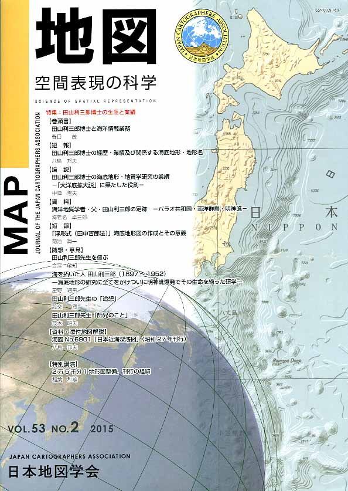

≪No.53 No.2 添付地図≫

本図を許可なく複製・利用することを禁止します。
| 最 新 号 | バックナンバー | 添付地図目録 | 投 稿 規 程 |
Vol.53 No.２ （通巻２１０号） ２０１５年 《特集：田山利三郎博士の生涯と業績》
| 【巻頭言】 | 田山利三郎博士と海洋情報業務 | 春日 茂 |
| キーワード：田山利三郎博士、海洋情報業務 | ||
| 【短報】 | 田山利三郎博士の経歴・業績及び関係する海底地形・地形名 | 八島邦夫 |
| キーワード：田山利三郎、日本近海深浅図、珊瑚礁、明神礁 | ||
| 【論説】 | 田山利三郎博士の海底地形・地質学研究の業績 −「大洋底拡大説」に果たした役割− | 中陣隆夫 |
| キーワード：田山利三郎、海底地形・地質学、南洋群島、大洋底拡大説、珊瑚礁、ギヨー、地質学史 | ||
| 【資料】 | 海洋地質学者・父・田山利三郎の足跡 −パラオ共和国・南洋群島・明神礁− | 海老名卓三郎 |
| キーワード：田山利三郎、南洋群島、珊瑚礁、パラオ共和国、明神礁 | ||
| 【短報】 | 「浮彫式（田中吉郎法）」海底地形図の作成とその意義 | 菊池眞一 |
| キーワード：レリーフコンター法、彫塑的水平線図法、正形浮上り線図法、日本近海深浅図 | ||
| 【随想・意見】 | 田山利三郎先生を偲ぶ | 金窪敏知 |
| 海を拓いた人 田山利三郎（1897〜1952） −海底地形の研究に全てをかけついに明神礁爆発でその生命を絶った碩学− | 星野通平 | |
| 田山利三郎先生の「追想」 | 設楽 寛 | |
| 田山利三郎先生「師兄のこと」 | 茂木昭夫 | |
| 【資料・添付地図解説】 | 海図No.6901「日本近海深浅図」（昭和27年刊行） | 八島邦夫 |
| キーワード：日本近海深浅図、海底地形図、浮彫式、田中吉郎法、田山利三郎 | ||
| 【特別講演】 | 2万5千分1地形図整備、刊行の経緯 | 稲葉和雄 |
| 【書評・紹介】 | 江戸幕府撰日本総図の研究 | 鈴木純子 |
| 理科好きな子に育つ ふしぎのお話365 | 佐藤 潤 | |
| 防災・減災につなげるハザードマップの活かし方 | 佐藤 潤 | |
| 図説 日本の湖 | 谷口智雅 | |
| 【特別会員名簿】 | ||
| 【学会記事】 | ||
| 【添付地図】 | 海図No.6901「日本近海深浅図」（昭和27年刊行） | |
|
≪No.53 No.2 表紙≫ |
|
|  |
|
|
|
≪No.53 No.2 添付地図≫ |
|
本図を許可なく複製・利用することを禁止します。
|